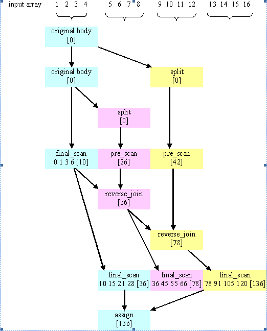

#include "tbb/parallel_scan.h"
template<typename Range, typename Body>
void parallel_scan( const Range& range, Body& body [, partitioner] );
template<typename Range, typename Value, typename Scan, typename Combine>
Value parallel_scan( const Range& range, const Value& identity,
const Scan& scan, const Combine& combine
[, partitioner] );
where the optional partitioner declares auto_partitioner or simple_partitioner as shown in column 1 of the Partitioners table in the Partitioners section.
The parallel_scan template function computes a parallel prefix, also known as parallel scan. This computation is an advanced concept in parallel computing that is sometimes useful in scenarios that appear to have inherently serial dependences.
A mathematical definition of the parallel prefix is as follows. Let × be an associative operation with left-identity element id×. The parallel prefix of × over a sequence z0, z1, ...zn-1 is a sequence y0, y1, y2, ...yn-1 where:
For example, if × is addition, the parallel prefix corresponds a running sum. A serial implementation of parallel prefix is:
T temp = id×;
for( int i=1; i<=n; ++i ) {
temp = temp × z[i];
y[i] = temp;
}
Parallel prefix performs this in parallel by reassociating the application of × and using two passes. It may invoke × up to twice as many times as the serial prefix algorithm. Even though it does more work, given the right grain size the parallel algorithm can outperform the serial one because it distributes the work across multiple hardware threads. To obtain decent speedup, systems with more than two cores are recommended.
The parallel_scan template function has two forms. The imperative form parallel_scan(range, body) implements parallel prefix generically. Type Range must model the Range concept. The body must model the requirements in the following table.
|
Pseudo-Signature |
Semantics |
|---|---|
|
void Body::operator()( const Range& r, pre_scan_tag ) |
Accumulate summary for range r. |
|
void Body::operator()( const Range& r, final_scan_tag ) |
Compute scan result and summary for range r. |
|
Body::Body( Body& b, split ) |
Split b so that this and b can accumulate summaries separately. |
|
void Body::reverse_join( Body& b ) |
Merge summary accumulated by b into summary accumulated by this, where this was created earlier from b by splitting constructor. |
|
void Body::assign( Body& b ) |
Assign summary of b to this. |
A summary contains enough information such that for two consecutive subranges r and s:
For example, if computing a running sum of an array, the summary for a range r is the sum of the array elements corresponding to r.
The functional form parallel_scan(range, identity, scan, combine) is designed to use with functors and lambda expressions, hiding some complexities of the imperative form. It uses the same scan functor in both passes, differentiating them via a Boolean parameter, combines summaries with combine functor, and returns the summary computed over the whole range. The table below summarizes the type requirements on the types of identity, scan, and combine.
|
Pseudo-Signature |
Semantics |
|---|---|
|
Value identity |
Left identity element for Scan::operator(). |
|
Value Scan::operator()(const Range& r, const Value& sum, bool is_final) const |
Starting with sum, compute the summary and, for is_final == true, the scan result for range r. Return the computed summary. |
|
Value Combine::operator()(const Value& left, const Value& right) const |
Combine summaries left and right, and return the result. |
The figure below shows one way that parallel_scan might compute the running sum of an array containing the integers 1-16. Time flows downwards in the diagram. Each color denotes a separate Body object. Summaries are shown in brackets.
Note that two quarters of the array were not prescanned. The parallel_scan template makes an effort to avoid prescanning where possible, to improve performance when there are only a few or no extra worker threads. If no other workers are available, parallel_scan processes the subranges without any pre_scans, by processing the subranges from left to right using final scans. That's why final scans must compute a summary as well as the final scan result. The summary might be needed to process the next subrange if no worker thread has prescanned it yet.
Example Execution of parallel_scan
The following code demonstrates how Body could be implemented for parallel_scan to compute the same result as the earlier sequential example involving ×.
class Body {
T sum;
T* const y;
const T* const z;
public:
Body( T y_[], const T z_[] ) : sum(id×), z(z_), y(y_) {}
T get_sum() const { return sum; }
template<typename Tag>
void operator()( const tbb::blocked_range<int>& r, Tag ) {
T temp = sum;
for( int i=r.begin(); i<r.end(); ++i ) {
temp = temp × z[i];
if( Tag::is_final_scan() )
y[i] = temp;
}
sum = temp;
}
Body( Body& b, tbb::split ) : z(b.z), y(b.y), sum(id×) {}
void reverse_join( Body& a ) { sum = a.sum × sum; }
void assign( Body& b ) { sum = b.sum; }
};
T DoParallelScan( T y[], const T z[], int n ) {
Body body(y,z);
tbb::parallel_scan( tbb::blocked_range<int>(0,n), body );
return body.get_sum();
}
The definition of operator() demonstrates typical patterns when using parallel_scan.
The operation reverse_join is similar to the operation join used by parallel_reduce, except that the arguments are reversed. That is, this is the right argument of ×. Template function parallel_scan decides if and when to generate parallel work. It is thus crucial that × is associative and that the methods of Body faithfully represent it. Operations such as floating-point addition that are somewhat associative can be used, with the understanding that the results may be rounded differently depending upon the association used by parallel_scan. The reassociation may differ between runs even on the same machine. However, if there are no worker threads available, execution associates identically to the serial form shown at the beginning of this section.
If you change the example to use a simple_partitioner, be sure to provide a grain size. The code below shows the how to do this for the grain size of 1000:
parallel_scan(blocked_range<int>(0,n,1000), total, simple_partitioner() );
The following is analogous to the previous example, but written using lambda expressions and the functional form of parallel_scan
T DoParallelScan( T y[], const T z[], int n ) {
return tbb::parallel_scan(
tbb::blocked_range<int>(0,n),
id×,
[](const tbb::blocked_range<int>& r, T sum, bool is_final_scan)->T {
T temp = sum;
for( int i=r.begin(); i<r.end(); ++i ) {
temp = temp × z[i];
if( is_final_scan )
y[i] = temp;
}
return temp;
},
[]( T left, T right ) {
return left × right;
}
);
}